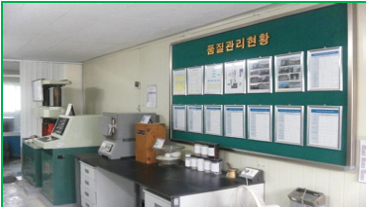
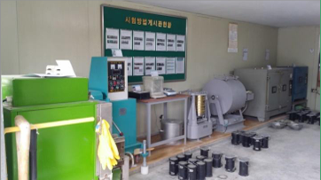
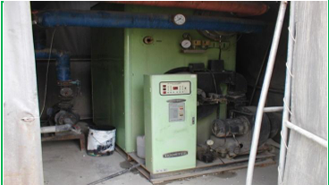
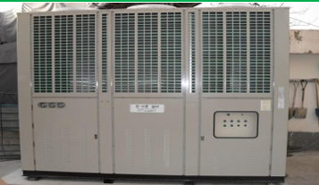
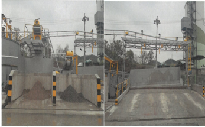
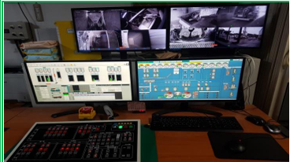
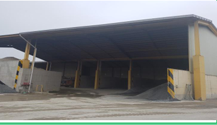
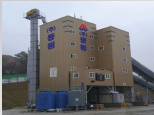

현장을 멈추지 않게 하는
안정적인 레미콘 공급 파트너
대덕산업(주)는 대전광역시 대덕구 평촌2길 38에 위치한 레디믹스트 콘크리트 제조기업입니다. 생산·품질·출하가 유기적으로 연결된 운영 체계를 바탕으로 건설 현장에 필요한 제품을 안정적으로 공급합니다.
“항상 발전하는 회사”라는 방향 아래, 설비와 품질관리 수준을 꾸준히 높이며 고객이 안심하고 거래할 수 있는 기업으로 성장하고 있습니다.
대덕산업(주)는 레디믹스트 콘크리트 전문기업으로서 체계적인 품질관리, 안정적인 생산체계, 현장 중심의 공급 대응력을 바탕으로 고객 요구에 신속하고 성실하게 대응하고 있습니다.
대덕산업(주)의 강점은 길게 설명하지 않아도 명확합니다. 품질 기준, 생산 안정성, 현장 대응력을 기반으로 고객이 신뢰할 수 있는 레미콘을 공급합니다.
대덕산업(주)는 대전광역시 대덕구 평촌2길 38에 위치한 레디믹스트 콘크리트 제조기업입니다. 생산·품질·출하가 유기적으로 연결된 운영 체계를 바탕으로 건설 현장에 필요한 제품을 안정적으로 공급합니다.
“항상 발전하는 회사”라는 방향 아래, 설비와 품질관리 수준을 꾸준히 높이며 고객이 안심하고 거래할 수 있는 기업으로 성장하고 있습니다.
시험실·품질관리 기반으로 출하 전 품질 신뢰를 확보합니다.
주요 설비 운영과 공정 관리로 안정적인 생산 환경을 유지합니다.
고객 일정과 현장 조건에 맞춘 출하·납품 협의를 지원합니다.
대표 인사말은 장문보다 신뢰의 방향이 분명해야 합니다. 고객에게 전하고 싶은 핵심 메시지를 짧고 품격 있게 정리했습니다.
대덕산업(주)은 고객 여러분의 신뢰를 바탕으로 레디믹스트 콘크리트 제조 분야에서 꾸준히 성장해 왔습니다.
당사는 품질을 기업 운영의 기본으로 삼고, 체계적인 생산관리와 성실한 납기 대응을 통해 건설 현장에 안정적인 제품을 공급하고 있습니다.
앞으로도 지속적인 설비 개선과 품질 경쟁력 강화를 통해 고객 만족과 지역사회 기여를 함께 실천하는 기업으로 발전하겠습니다.
대덕산업(주)가 쌓아온 설립, 설비 확장, 품질 인증, 생산 기반 고도화의 흐름을 핵심 이정표 중심으로 정리했습니다.
대덕산업주식회사 설립, 공장등록, KS F 4009 인증 취득
1호기 210㎥/hr, 2호기 150㎥/hr 배처플랜트 증설
포장·고강도 KS 인증 및 경영혁신형 중소기업 선정
칠러·골재장·재생시설 확충과 대표이사 취임
대덕산업주식회사 설립, 공장등록증 교부, 한국산업규격 KS F 4009 취득, 한중 보일러 설치.
1호기 210㎥/hr, 2호기 150㎥/hr 설비 증설로 생산 대응력을 강화했습니다.
포장 콘크리트 분야 인증 기반을 확보하며 제품 신뢰도를 높였습니다.
고강도 KS 인증 취득, 중소기업청장 표창, 경영혁신형 중소기업 선정.
계절 조건에 따른 품질 편차를 줄이기 위한 CHILLER 설비를 신설했습니다.
안전관리 체계를 강화하며 안정적인 사업장 운영 기반을 마련했습니다.
원재료 보관 환경을 개선하고 생산 품질 안정성을 높였습니다.
자원 재활용과 운영 효율 향상을 위한 재생시설을 확충했습니다.
송영우 대표이사 취임, KS 표시 인증서 확인, 환경성적 관련 인증 이력 확인.
영업관리는 단순 상담이 아니라 현장 일정, 출하 협의, 납품 대응을 연결하는 고객 접점입니다.
제품 문의부터 물량·일정 협의, 출하 연계까지 생산관리·품질관리·출하실과 함께 움직이며 고객사의 공정이 안정적으로 이어지도록 대응합니다.
제품, 물량, 일정 조건을 빠르게 확인합니다.
납품 위치와 배차 조건을 기준으로 공급 가능성을 검토합니다.
생산·품질·출하 운영을 연결해 납기 안정성을 높입니다.
현장 일정 변화에 유연하게 협의하며 신뢰를 쌓습니다.
인증과 시험, 출하 전 관리 프로세스를 중심으로 고객이 신뢰할 수 있는 품질관리 체계를 명확히 보여주는 섹션입니다.
품질관리실 및 시험실 전경, 인증서 이미지, 시험 장비 사진을 조합해 웹상에서 신뢰도를 높이는 구성을 반영했습니다.

품질관리실
품질관리 현황과 시험 관리 체계를 현장에서 확인할 수 있는 공간입니다.

시험실
배합 및 품질 확인을 위한 시험 장비와 시험 운영 환경을 보여줍니다.

보일러 설비
안정적인 생산 환경 유지를 위한 보조 설비를 함께 운영하고 있습니다.

한·서중 칠러
계절 조건에 따른 품질 편차를 줄이기 위한 온도 관리 설비입니다.
설비 운영, 배합 일관성, 출하 준비, 재생시설 운용 등 실제 생산 기반을 구조적으로 보여줍니다.
시멘트 SILO, 혼화재 SILO, 골재장 상옥시설 등 저장 인프라를 기반으로 원재료 관리 체계를 운영합니다.
210㎥/hr, 150㎥/hr 배처플랜트 2기 운영을 통해 제품 생산의 연속성과 유연성을 확보합니다.
출하실과 운전실 전경 자료를 기반으로, 생산과 출하가 유기적으로 연결되는 현장 대응 체계를 보여줍니다.
폐레미콘 처리시설 24㎥/hr, 회수수탱크, 칠러 및 보일러 설비를 통해 운영 효율과 환경 대응력을 함께 강화합니다.

1호기 배처플랜트
생산능력 210㎥/hr 기반의 주력 생산 설비입니다.

2호기 배처플랜트
생산능력 150㎥/hr 기반의 보조 생산 설비입니다.

저장설비
골재 및 원재료를 안정적으로 보관하는 저장 인프라입니다.

이송시설
원재료 이송과 공정 연결을 담당하는 설비 구간입니다.

재생시설
폐레미콘 처리와 재활용 운용을 지원하는 설비입니다.

믹서 관리 설비
믹서 운용 상태와 살수 관리 등 현장 운전 요소를 보여줍니다.

출하실·관제 모니터
출하 및 설비 운전 상황을 실시간으로 확인하는 운영 공간입니다.

골재장 상옥시설
원재료 보관 환경을 체계적으로 유지하기 위한 설비입니다.
첨부해 주신 계열사 사진을 반영해 카드형 섹션으로 정리했습니다. 주소와 전화번호는 이번 대화에서 정확한 확인 자료가 없어 입력 필요로 표시했습니다.



문의는 전화로만 안내하는 형태로 구성했습니다. 빠른 상담과 출하 문의가 가능하도록 핵심 연락처만 간결하게 제공해 드립니다.